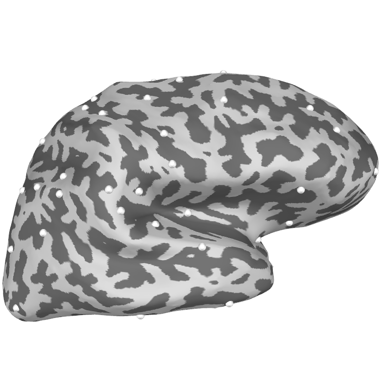
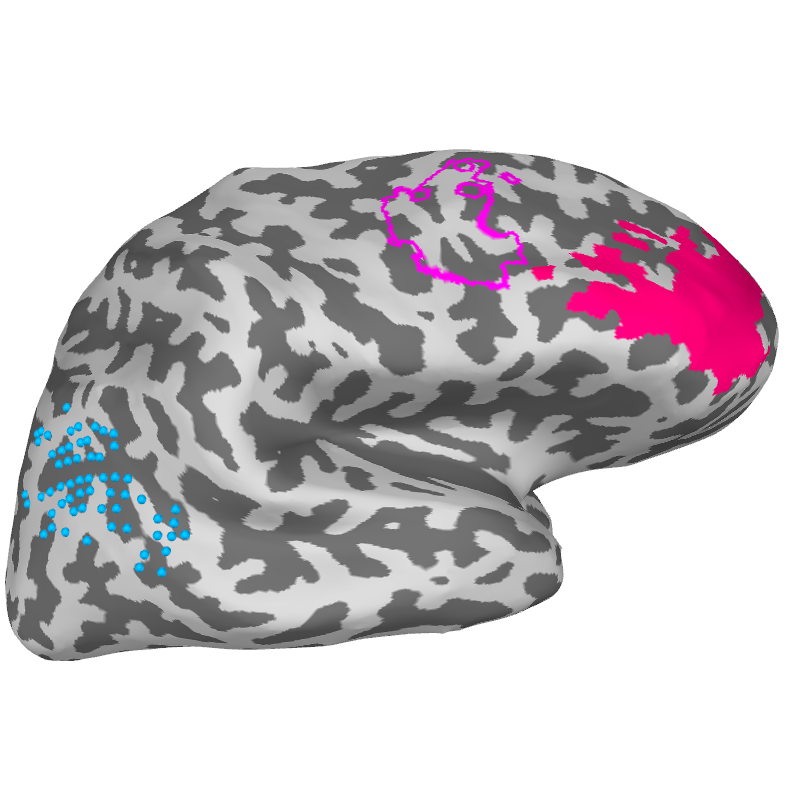

Note
Go to the end to download the full example code
Create a MEG informed cortical parcellation¶
This example shows how to generate and visualize a lead-field based MEG informed cortical parcellation.
Import the required
from megicparc import (compute_distance_matrix, compute_parcellation,
store_flame_labels)
from megicparc.viz import (plot_flame_labels, plot_flame_centroids)
from mne import (read_forward_solution, read_source_spaces,
read_labels_from_annot, pick_types_forward,
convert_forward_solution)
from mne.datasets import sample
import os.path as op
Define input parameters for the flame algorithm running in megicperc
parc = 'aparc'
gamma = 0.8
theta = 0.05
sensors_meg = 'grad'
knn = 30
Load lead-field matrix and source-space
data_path = sample.data_path()
subjects_dir = op.join(data_path, 'subjects')
subject = 'sample'
fwd_file = op.join(data_path, 'MEG', subject, 'sample_audvis-meg-eeg-oct-6-fwd.fif')
src_file = op.join('..', 'data', 'data_mne_sample', 'source_space_distance-src.fif')
fwd = read_forward_solution(fwd_file)
fwd = pick_types_forward(fwd, meg=sensors_meg, eeg=False,
ref_meg=False, exclude='bads')
fwd = convert_forward_solution(fwd, surf_ori=True, force_fixed=True,
use_cps=True)
src = read_source_spaces(src_file)
# Inter-source distances along the cortical surface has been added
# to the source-space as follows
#from mne import add_source_space_distances
#src = add_source_space_distances(fwd['src'])
#src.save(op.join('..', 'data', 'data_mne_sample', 'source_space_distance-src.fif'))
fwd['src'] = src
Reading forward solution from /u/29/sommars1/unix/mne_data/MNE-sample-data/MEG/sample/sample_audvis-meg-eeg-oct-6-fwd.fif...
Reading a source space...
Computing patch statistics...
Patch information added...
Distance information added...
[done]
Reading a source space...
Computing patch statistics...
Patch information added...
Distance information added...
[done]
2 source spaces read
Desired named matrix (kind = 3523) not available
Read MEG forward solution (7498 sources, 306 channels, free orientations)
Desired named matrix (kind = 3523) not available
Read EEG forward solution (7498 sources, 60 channels, free orientations)
Forward solutions combined: MEG, EEG
Source spaces transformed to the forward solution coordinate frame
203 out of 366 channels remain after picking
Average patch normals will be employed in the rotation to the local surface coordinates....
Converting to surface-based source orientations...
[done]
Reading a source space...
Computing patch statistics...
Patch information added...
Distance information added...
[done]
Reading a source space...
Computing patch statistics...
Patch information added...
Distance information added...
[done]
2 source spaces read
Load the cortical atlas and run flame algorithm
label_lh = read_labels_from_annot(subject=subject, parc=parc, hemi='lh',
subjects_dir=subjects_dir)
label_rh = read_labels_from_annot(subject=subject, parc=parc, hemi='rh',
subjects_dir=subjects_dir)
label = label_lh + label_rh
sort_dist = compute_distance_matrix(fwd, gamma=gamma,
theta=theta, labels=label)
sample_parc = compute_parcellation(sort_dist, k_nn=knn)
# Store megic parcels as mne-python labels for visualization purpose.
sample_parc_labels = store_flame_labels(sample_parc, src, subject)
""
plot_flame_centroids(sample_parc, fwd['src'], subject, subjects_dir,
brain=None, surf='inflated', scale_factor=0.5,
color='white')
""
brain_parc = plot_flame_labels([87], sample_parc_labels, src, subject,
subjects_dir, surf='inflated', brain=None,
color=None, plot_region=True,
plot_points=False, plot_borders=False)
plot_flame_labels([80], sample_parc_labels, src, subject,
subjects_dir, surf='inflated', brain=brain_parc,
color=None, plot_region=False,
plot_points=False, plot_borders=True)
plot_flame_labels([52], sample_parc_labels, src, subject,
subjects_dir, surf='inflated', brain=brain_parc,
color=None, plot_region=False,
plot_points=True, plot_borders=False)
""
# sphinx_gallery_thumbnail_number = 2
- 
- 
Reading labels from parcellation...
read 34 labels from /u/29/sommars1/unix/mne_data/MNE-sample-data/subjects/sample/label/lh.aparc.annot
Reading labels from parcellation...
read 34 labels from /u/29/sommars1/unix/mne_data/MNE-sample-data/subjects/sample/label/rh.aparc.annot
Using leadfield of size = (203, 7498)
Computing distance matrix for gamma=0.80 theta=0.05
Reading cortical distance from src
Adding anatomical constraints
Computing cosine distance
Normalizing leadfield for grad sensors
Check n_vert = 7498
1
6.157426368290271
2
3.7167014692484543
3
2.7595568820368537
4
2.1770745993405196
5
1.7817718557087614
6
1.4964028907957063
7
1.2810666930290426
8
1.1129196110845063
9
0.9779730199638816
10
0.8672296083797089
11
0.7746699263117646
12
0.6961309771802204
13
0.6286492641904173
14
0.5700602769336963
15
0.5187461067810686
16
0.4734718460760014
17
0.43327687565705086
18
0.3974010025990008
19
0.3652332493560549
20
0.33627567664175245
21
0.31011737542352164
22
0.28641545879157715
23
0.26488095130827444
24
0.2452681578848642
25
0.22736654105904522
26
0.21099443194069117
27
0.19599409960543274
28
0.18222783986229002
29
0.16957483842881182
30
0.15792862939397795
31
0.14719501646271613
32
0.13729035784574115
33
0.12814013980691955
34
0.11967778154916911
35
0.11184362716809944
36
0.10458409015114582
37
0.09785092324402002
38
0.09160059209736163
39
0.08579373540130479
40
0.08039469754551559
41
0.07537112244521489
42
0.07069359922461937
43
0.0663353520838521
44
0.06227196797834333
45
0.05848115679503172
46
0.05494253956603014
47
0.05163746095833642
48
0.048548822854177574
49
0.0456609363125004
50
0.042959389596504444
51
0.04043093028332911
52
0.038063359748868424
53
0.0358454385541293
54
0.033766801457893014
55
0.03181788094806556
56
0.029989838327624932
57
0.02827450151300099
58
0.026664308809404624
59
0.02515225801629955
60
0.023731860295478985
61
0.02239709830174145
62
0.021142388134844883
63
0.019962544721738577
64
0.018852750283739374
65
0.017808525581248767
66
0.01682570366316887
67
0.015900405877768028
68
0.015029019928061813
69
0.014208179777922277
70
0.013434747235812014
71
0.012705795059892841
72
0.012018591446293808
73
0.011370585774271958
74
0.010759395495847129
75
0.0101827940686561
76
0.009638699840024119
77
0.009125165799637017
78
0.008640370126349354
79
0.008182607460930871
80
0.007750280843866498
81
0.007341894262344808
82
0.006956045756010095
83
0.00659142103554265
84
0.006246787572289689
85
0.005920989120899259
86
0.005612940640389889
87
0.005321623581910057
88
0.00504608151435212
89
0.004785416061388915
90
0.004538783125850787
91
0.0043053893793682475
92
0.004084488996895996
93
0.0038753806177334363
94
0.0036774045158590543
95
0.003489939964084615
96
0.003312402777599576
97
0.00314424302360447
98
0.0029849428850571612
99
0.0028340146672365947
100
0.0026909989369327367
101
0.002555462784482434
102
0.0024269982002427188
103
0.002305220557191549
104
0.00218976719222707
105
0.002080296079381186
106
0.0019764845883202763
107
0.0018780283224770424
108
0.0017846400312694012
109
0.0016960485912366737
110
0.0016119980515952278
111
0.0015322467397438442
112
0.001456566422705033
113
0.0013847415208352587
114
0.001316568370177079
115
0.0012518545304267099
116
0.0011904181354209376
117
0.0011320872833338162
118
0.0010766994640388887
119
0.0010241010212374726
120
0.0009741466470732299
121
0.0009266989072108929
122
0.0008816277943082394
123
0.0008388103082755825
124
0.0007981300613639352
125
0.0007594769068308193
126
0.0007227465893925228
127
0.0006878404163117317
128
0.000654664947754979
129
0.000623131705259875
130
0.000593156897164764
131
0.0005646611599628523
132
0.0005375693145845616
133
0.0005118101368200348
134
0.00048731614080690325
135
0.00046402337505379215
136
0.0004418712299474582
137
0.0004208022563764494
138
0.0004007619944999047
139
0.00038169881231325884
140
0.00036356375323167036
141
0.00034631039230684696
142
0.00032989470045616937
143
0.00031427491629581404
144
0.00029941142513750275
145
0.00028526664467143814
146
0.0002718049170180173
147
0.000258992406721946
148
0.00024679700439666184
149
0.00023518823563616086
150
0.00022413717493988028
151
0.0002136163643400261
152
0.00020359973647692334
153
0.00019406254183282
154
0.00018498127996314964
155
0.00017633363439856868
156
0.00016809841109042674
157
0.0001602554801927264
158
0.00015278572092296776
159
0.00014567096943333678
160
0.00013889396943435456
161
0.00013243832547483238
162
0.0001262884586998951
163
0.00012042956496973042
164
0.00011484757519355958
165
0.00010952911775628751
166
0.00010446148295438655
167
9.963258927248465e-05
168
9.503095146479708e-05
169
9.064565027965015e-05
170
8.646630380433468e-05
171
8.248304028754426e-05
172
7.868647236530854e-05
173
7.50676726765787e-05
174
7.161815068218374e-05
175
6.832983074658006e-05
176
6.519503131048642e-05
177
6.220644516531716e-05
178
5.9357120731175e-05
179
5.6640444302024886e-05
180
5.405012321037848e-05
181
5.1580169844793534e-05
182
4.922488648740546e-05
183
4.6978850938623984e-05
184
4.4836902852309234e-05
185
4.2794130802756e-05
186
4.084585996024551e-05
187
3.898764044013498e-05
188
3.7215236212218664e-05
189
3.552461458156799e-05
190
3.3911936202075486e-05
191
3.2373545588282014e-05
192
3.090596211188845e-05
193
2.9505871439169516e-05
194
2.8170117417777896e-05
195
2.6895694347325637e-05
196
2.567973965537843e-05
197
2.451952692273482e-05
198
2.3412459278049818e-05
199
2.2356063099109858e-05
200
2.1347982039166966e-05
201
2.0385971354794473e-05
202
1.946789249628702e-05
203
1.8591707991691256e-05
204
1.7755476560942044e-05
205
1.6957348484424006e-05
206
1.6195561192965213e-05
207
1.546843508340155e-05
208
1.4774369531657001e-05
209
1.4111839103711755e-05
210
1.347938995581904e-05
211
1.2875636408363084e-05
212
1.229925768695595e-05
213
1.1748994822106923e-05
214
1.12236477054892e-05
215
1.0722072281900983e-05
216
1.0243177884026441e-05
217
9.785924694015581e-06
218
9.349321328196744e-06
219
8.932422539403611e-06
220
8.534327032283202e-06
221
8.154175380683792e-06
222
7.791148047774996e-06
223
7.444463504366105e-06
224
7.11337643077814e-06
225
6.797176014287285e-06
226
6.495184318968771e-06
227
6.206754743510092e-06
228
5.931270544098791e-06
229
5.6681434361628256e-06
230
5.416812255754044e-06
231
5.1767416883612675e-06
232
4.947421061927612e-06
233
4.7283631894818225e-06
234
4.519103275326354e-06
235
4.319197866657852e-06
236
4.12822385751759e-06
237
3.945777542809105e-06
238
3.7714737121928505e-06
239
3.6049447920326314e-06
240
3.445840022296362e-06
241
3.2938246779359623e-06
242
3.148579322891777e-06
243
3.0097991034113275e-06
244
2.8771930701109196e-06
245
2.7504835357067633e-06
246
2.629405460601586e-06
247
2.513705869141566e-06
248
2.4031432920397723e-06
249
2.297487235150585e-06
250
2.1965176740475423e-06
251
2.1000245718441337e-06
252
2.007807418909563e-06
253
1.9196747946339464e-06
254
1.8354439496136916e-06
255
1.7549404084785473e-06
256
1.6779975886663223e-06
257
1.6044564391568617e-06
258
1.5341650956686467e-06
259
1.4669785515136953e-06
260
1.4027583431485803e-06
261
1.3413722525670872e-06
262
1.2826940196447888e-06
263
1.2266030722111725e-06
264
1.1729842651751813e-06
265
1.121727634112295e-06
266
1.0727281590199096e-06
267
1.0258855385491105e-06
268
9.811039759628494e-07
Using pyvistaqt 3d backend.
''
Total running time of the script: (6 minutes 37.613 seconds)